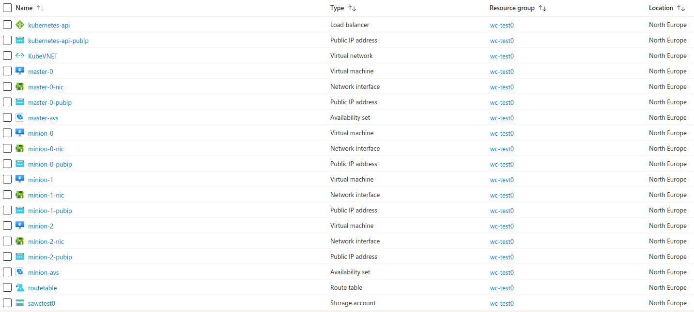

This page is out of date
We are currently working on internal documentation to streamline Compliant Kubernetes onboarding for selected cloud providers. Until those documents are ready, and until we have capacity to make parts of that documentation public, this page is out-of-date.
Nevertheless, parts of it are useful. Use at your own risk and don't expect things to work smoothly.
Compliant Kubernetes Deployment on Azure¶
This document contains instructions on how to setup a service cluster and a workload cluster in Azure. The following are the main tasks addressed in this document:
- Infrastructure setup for two clusters: one service and one workload cluster
- Deploying Compliant Kubernetes on top of the two clusters.
- Creating DNS Records
- Deploying Rook Storage Orchestration Service
- Deploying Compliant Kubernetes apps
Before starting, make sure you have all necessary tools.
Note
This guide is written for compliantkubernetes-apps v0.13.0
Setup¶
Choose names for your service cluster and workload clusters, as well as the DNS domain to expose the services inside the service cluster:
SERVICE_CLUSTER="sc-test"
WORKLOAD_CLUSTERS=( "wc-test0" )
BASE_DOMAIN="example.com"
Infrastructure Setup using AzureRM¶
We suggest to set up Kubernetes clusters using kubespray. If you haven't done so already, clone the Elastisys Compliant Kubernetes Kubespray repo as follows:
git clone --recursive https://github.com/elastisys/compliantkubernetes-kubespray
cd compliantkubernetes-kubespray
Install azure-cli¶
If you haven't done so already, please install and configure azure-cli.
Login with azure-cli¶
az login
Customize your infrastructure¶
Create a configuration for the service and the workload clusters:
pushd kubespray/contrib/azurerm/
for CLUSTER in ${SERVICE_CLUSTER} "${WORKLOAD_CLUSTERS[@]}"; do
az group create -g $CLUSTER -l northeurope
mkdir -p $CLUSTER/inventory
done
popd
Note
Please specify the value for the ssh_public_keys variable in kubespray/contrib/azurerm/group_vars/all.
It must be your SSH public key to access your Azure virtual machines.
Besides, the value for the cluster_name variable must be globally unique due to some restrictions in Azure.
Make sure that $SERVICE_CLUSTER and $WORKLOAD_CLUSTERS are unique.
Review and, if needed, adjust the files in kubespray/contrib/azurerm/group_vars/all accordingly.
Generate and apply the templates¶
pushd kubespray/contrib/azurerm/
tmp=""
for CLUSTER in ${SERVICE_CLUSTER} "${WORKLOAD_CLUSTERS[@]}"; do
cat group_vars/all \
| sed \
-e "s@^cluster_name:.*@cluster_name: \"$CLUSTER\"@" \
> group_vars/all1
cat group_vars/all1 > group_vars/all
rm group_vars/all1
if [ -z $tmp ]
then
sed -i "s/{{ playbook_dir }}/{{ playbook_dir }}\/$CLUSTER/g" roles/generate-templates/tasks/main.yml
ansible-playbook generate-templates.yml
az deployment group create --template-file ./$CLUSTER/.generated/network.json -g $CLUSTER
az deployment group create --template-file ./$CLUSTER/.generated/storage.json -g $CLUSTER
az deployment group create --template-file ./$CLUSTER/.generated/availability-sets.json -g $CLUSTER
az deployment group create --template-file ./$CLUSTER/.generated/bastion.json -g $CLUSTER
az deployment group create --template-file ./$CLUSTER/.generated/masters.json -g $CLUSTER
az deployment group create --template-file ./$CLUSTER/.generated/minions.json -g $CLUSTER
else
sed -i "s/{{ playbook_dir }}\/$tmp/{{ playbook_dir }}\/$CLUSTER/g" roles/generate-templates/tasks/main.yml
ansible-playbook generate-templates.yml
az deployment group create --template-file ./$CLUSTER/.generated/network.json -g $CLUSTER
az deployment group create --template-file ./$CLUSTER/.generated/storage.json -g $CLUSTER
az deployment group create --template-file ./$CLUSTER/.generated/availability-sets.json -g $CLUSTER
az deployment group create --template-file ./$CLUSTER/.generated/bastion.json -g $CLUSTER
az deployment group create --template-file ./$CLUSTER/.generated/masters.json -g $CLUSTER
az deployment group create --template-file ./$CLUSTER/.generated/minions.json -g $CLUSTER
fi
tmp=$CLUSTER
done
sed -i "s/{{ playbook_dir }}\/$tmp/{{ playbook_dir }}/g" roles/generate-templates/tasks/main.yml
sed -i "s/{{ playbook_dir }}\/$tmp/{{ playbook_dir }}/g" roles/generate-inventory_2/tasks/main.yml
sed -i "s/{{ playbook_dir }}\/$tmp/{{ playbook_dir }}/g" roles/generate-inventory/tasks/main.yml
popd
Generating an inventory for kubespray¶
pushd kubespray/contrib/azurerm/
tmp=""
for CLUSTER in ${SERVICE_CLUSTER} "${WORKLOAD_CLUSTERS[@]}"; do
if [ -z $tmp ]
then
sed -i "s/{{ playbook_dir }}/{{ playbook_dir }}\/$CLUSTER/g" roles/generate-inventory_2/tasks/main.yml
sed -i "s/{{ playbook_dir }}/{{ playbook_dir }}\/$CLUSTER/g" roles/generate-inventory/tasks/main.yml
./generate-inventory.sh $CLUSTER
else
sed -i "s/{{ playbook_dir }}\/$tmp/{{ playbook_dir }}\/$CLUSTER/g" roles/generate-inventory_2/tasks/main.yml
sed -i "s/{{ playbook_dir }}\/$tmp/{{ playbook_dir }}\/$CLUSTER/g" roles/generate-inventory/tasks/main.yml
./generate-inventory.sh $CLUSTER
fi
tmp=$CLUSTER
done
sed -i "s/{{ playbook_dir }}\/$tmp/{{ playbook_dir }}/g" roles/generate-inventory_2/tasks/main.yml
sed -i "s/{{ playbook_dir }}\/$tmp/{{ playbook_dir }}/g" roles/generate-inventory/tasks/main.yml
popd
The inventory files for for cluster will be created under */inventory/.
Besides, two loadBalancer_vars.yaml files will be created, one for each cluster.
You may also want to check the Azure portal if the infrastructure was created correctly.
The figure below shows for wc-test0.

Deploying vanilla Kubernetes clusters using Kubespray¶
With the infrastructure provisioned, we can now deploy Kubernetes using kubespray.
First, change to the compliantkubernetes-kubespray root directory.
cd ..
Init the Kubespray config in your config path¶
export CK8S_CONFIG_PATH=~/.ck8s/azure
export CK8S_PGP_FP=<your GPG key fingerprint> # retrieve with gpg --list-secret-keys
for CLUSTER in ${SERVICE_CLUSTER} "${WORKLOAD_CLUSTERS[@]}"; do
./bin/ck8s-kubespray init $CLUSTER default $CK8S_PGP_FP
done
Copy the generated inventory files in the right location¶
for CLUSTER in ${SERVICE_CLUSTER} ${WORKLOAD_CLUSTERS[@]}; do
#add calico to the inventory file
cat kubespray/contrib/azurerm/$CLUSTER/inventory/inventory.j2 \
| sed '/\[k8s_cluster:children\]/i \[calico-rr\]' \
> $CK8S_CONFIG_PATH/$CLUSTER-config/inventory.ini
echo "calico-rr" >> $CK8S_CONFIG_PATH/$CLUSTER-config/inventory.ini $CK8S_CONFIG_PATH/$CLUSTER-config/inventory.ini
# Add ansible_user ubuntu (note that this assumes you have set admin_username in azurerm/group_vars/all to ubuntu)
echo -e 'ansible_user: ubuntu' >> $CK8S_CONFIG_PATH/$CLUSTER-config/group_vars/k8s_cluster/ck8s-k8s_cluster.yaml
# Get the IP address of the loadbalancer (to be added in kubadmin certSANs list which will be used for kubectl)
ip=$(grep -o '[0-9]\{1,3\}\.[0-9]\{1,3\}\.[0-9]\{1,3\}\.[0-9]\{1,3\}' kubespray/contrib/azurerm/$CLUSTER/loadbalancer_vars.yml)
echo 'supplementary_addresses_in_ssl_keys: ["'$ip'"]' >> $CK8S_CONFIG_PATH/$CLUSTER-config/group_vars/k8s_cluster/ck8s-k8s_cluster.yaml
echo -e 'nameservers:\n - 1.1.1.1' >> $CK8S_CONFIG_PATH/$CLUSTER-config/group_vars/k8s_cluster/ck8s-k8s_cluster.yaml
echo 'resolvconf_mode: host_resolvconf' >> $CK8S_CONFIG_PATH/$CLUSTER-config/group_vars/k8s_cluster/ck8s-k8s_cluster.yaml
done
Run kubespray to deploy the Kubernetes clusters¶
for CLUSTER in ${SERVICE_CLUSTER} "${WORKLOAD_CLUSTERS[@]}"; do
./bin/ck8s-kubespray apply $CLUSTER --flush-cache
done
This may take up to 30 minutes per cluster.
Please increase the value for timeout, e.g timeout=30, in kubespray/ansible.cfg if you face the following issue while running step-3.
TASK [bootstrap-os : Fetch /etc/os-release] ****************************************************
fatal: [minion-0]: FAILED! => {"msg": "Timeout (12s) waiting for privilege escalation prompt: "}
fatal: [minion-1]: FAILED! => {"msg": "Timeout (12s) waiting for privilege escalation prompt: "}
fatal: [minion-2]: FAILED! => {"msg": "Timeout (12s) waiting for privilege escalation prompt: "}
fatal: [master-0]: FAILED! => {"msg": "Timeout (12s) waiting for privilege escalation prompt: "}
Correct the Kubernetes API IP addresses¶
Get the public IP address of the loadbalancer:
grep -o '[0-9]\{1,3\}\.[0-9]\{1,3\}\.[0-9]\{1,3\}\.[0-9]\{1,3\}' kubespray/contrib/azurerm/$CLUSTER/loadbalancer_vars.yml
Locate the encrypted kubeconfigs kube_config_*.yaml and edit them using sops.
Copy the IP shown above into kube_config_*.yaml. Do not overwrite the port.
for CLUSTER in ${SERVICE_CLUSTER} "${WORKLOAD_CLUSTERS[@]}"; do
sops ${CK8S_CONFIG_PATH}/.state/kube_config_$CLUSTER.yaml
done
Test access to the clusters as follows¶
for CLUSTER in ${SERVICE_CLUSTER} "${WORKLOAD_CLUSTERS[@]}"; do
sops exec-file ${CK8S_CONFIG_PATH}/.state/kube_config_$CLUSTER.yaml \
'kubectl --kubeconfig {} get nodes'
done
Deploy Rook¶
To deploy Rook, please go to the compliantkubernetes-kubespray repo root directory and run the following.
for CLUSTER in ${SERVICE_CLUSTER} "${WORKLOAD_CLUSTERS[@]}"; do
sops --decrypt ${CK8S_CONFIG_PATH}/.state/kube_config_$CLUSTER.yaml > $CLUSTER.yaml
export KUBECONFIG=$CLUSTER.yaml
./rook/deploy-rook.sh
shred -zu $CLUSTER.yaml
done
Please restart the operator pod, rook-ceph-operator*, if some pods stalls in initialization state as shown below:
rook-ceph rook-ceph-crashcollector-minion-0-b75b9fc64-tv2vg 0/1 Init:0/2 0 24m
rook-ceph rook-ceph-crashcollector-minion-1-5cfb88b66f-mggrh 0/1 Init:0/2 0 36m
rook-ceph rook-ceph-crashcollector-minion-2-5c74ffffb6-jwk55 0/1 Init:0/2 0 14m
Important
Pods in pending state usually indicate resource shortage. In such cases you need to use bigger instances.
Test Rook¶
To test Rook, proceed as follows:
for CLUSTER in ${SERVICE_CLUSTER} "${WORKLOAD_CLUSTERS[@]}"; do
sops exec-file ${CK8S_CONFIG_PATH}/.state/kube_config_$CLUSTER.yaml 'kubectl --kubeconfig {} apply -f https://raw.githubusercontent.com/rook/rook/release-1.5/cluster/examples/kubernetes/ceph/csi/rbd/pvc.yaml';
done
for CLUSTER in ${SERVICE_CLUSTER} "${WORKLOAD_CLUSTERS[@]}"; do
sops exec-file ${CK8S_CONFIG_PATH}/.state/kube_config_$CLUSTER.yaml 'kubectl --kubeconfig {} get pvc';
done
You should see PVCs in Bound state. If you want to clean the previously created PVCs:
for CLUSTER in ${SERVICE_CLUSTER} "${WORKLOAD_CLUSTERS[@]}"; do
sops exec-file ${CK8S_CONFIG_PATH}/.state/kube_config_$CLUSTER.yaml 'kubectl --kubeconfig {} delete pvc rbd-pvc';
done
Deploying Compliant Kubernetes Apps¶
Now that the Kubernetes clusters are up and running, we are ready to install the Compliant Kubernetes apps.
Clone compliantkubernetes-apps and Install Pre-requisites¶
If you haven't done so already, clone the compliantkubernetes-apps repo and install pre-requisites.
git clone https://github.com/elastisys/compliantkubernetes-apps.git
cd compliantkubernetes-apps
ansible-playbook -e 'ansible_python_interpreter=/usr/bin/python3' --ask-become-pass --connection local --inventory 127.0.0.1, get-requirements.yaml
Initialize the apps configuration¶
export CK8S_ENVIRONMENT_NAME=my-environment-name
#export CK8S_FLAVOR=[dev|prod] # defaults to dev
export CK8S_CONFIG_PATH=~/.ck8s/my-cluster-path
export CK8S_CLOUD_PROVIDER=# [exoscale|safespring|citycloud|aws|baremetal]
export CK8S_PGP_FP=<your GPG key fingerprint> # retrieve with gpg --list-secret-keys
./bin/ck8s init
This will initialise the configuration in the ${CK8S_CONFIG_PATH} directory. Generating configuration files sc-config.yaml and wc-config.yaml, as well as secrets with randomly generated passwords in secrets.yaml. This will also generate read-only default configuration under the directory defaults/ which can be used as a guide for available and suggested options.
ls -l $CK8S_CONFIG_PATH
Configure the apps¶
Edit the configuration files ${CK8S_CONFIG_PATH}/sc-config.yaml, ${CK8S_CONFIG_PATH}/wc-config.yaml and ${CK8S_CONFIG_PATH}/secrets.yaml and set the appropriate values for some of the configuration fields.
Note that, the latter is encrypted.
vim ${CK8S_CONFIG_PATH}/sc-config.yaml
vim ${CK8S_CONFIG_PATH}/wc-config.yaml
sops ${CK8S_CONFIG_PATH}/secrets.yaml
Tip
The default configuration for the service cluster and workload cluster are available in the directory ${CK8S_CONFIG_PATH}/defaults/ and can be used as a reference for available options.
Warning
Do not modify the read-only default configurations files found in the directory ${CK8S_CONFIG_PATH}/defaults/. Instead configure the cluster by modifying the regular files ${CK8S_CONFIG_PATH}/sc-config.yaml and ${CK8S_CONFIG_PATH}/wc-config.yaml as they will override the default options.
The following are the minimum change you should perform:
# ${CK8S_CONFIG_PATH}/sc-config.yaml and ${CK8S_CONFIG_PATH}/wc-config.yaml
global:
baseDomain: "set-me" # set to <enovironment_name>.$DOMAIN
opsDomain: "set-me" # set to ops.<environment_name>.$DOMAIN
issuer: letsencrypt-prod
objectStorage:
type: "s3"
s3:
region: "set-me" # Region for S3 buckets, e.g, west-1
regionEndpoint: "set-me" # e.g., https://s3.us-west-1.amazonaws.com
storageClasses:
default: rook-ceph-block
nfs:
enabled: false
cinder:
enabled: false
local:
enabled: false
ebs:
enabled: false
# ${CK8S_CONFIG_PATH}/sc-config.yaml
ingressNginx:
controller:
service:
type: "this-is-not-used"
annotations: "this-is-not-used"
harbor:
oidc:
groupClaimName: "set-me" # set to group claim name used by OIDC provider
issuers:
letsencrypt:
prod:
email: "set-me" # set this to an email to receive LetsEncrypt notifications
staging:
email: "set-me" # set this to an email to receive LetsEncrypt notifications
# ${CK8S_CONFIG_PATH}/secrets.yaml
objectStorage:
s3:
accessKey: "set-me" #set to your s3 accesskey
secretKey: "set-me" #set to your s3 secretKey
Install Compliant Kubernetes apps¶
Start with the service cluster:
ln -sf $CK8S_CONFIG_PATH/.state/kube_config_${SERVICE_CLUSTER}.yaml $CK8S_CONFIG_PATH/.state/kube_config_sc.yaml
./bin/ck8s apply sc # Respond "n" if you get a WARN
Then the workload clusters:
for CLUSTER in "${WORKLOAD_CLUSTERS[@]}"; do
ln -sf $CK8S_CONFIG_PATH/.state/kube_config_${CLUSTER}.yaml $CK8S_CONFIG_PATH/.state/kube_config_wc.yaml
./bin/ck8s apply wc # Respond "n" if you get a WARN
done
Settling¶
Important
Leave sufficient time for the system to settle, e.g., request TLS certificates from LetsEncrypt, perhaps as much as 20 minutes.
You can check if the system settled as follows:
for CLUSTER in ${SERVICE_CLUSTER} "${WORKLOAD_CLUSTERS[@]}"; do
sops exec-file ${CK8S_CONFIG_PATH}/.state/kube_config_$CLUSTER.yaml \
'kubectl --kubeconfig {} get --all-namespaces pods'
done
Check the output of the command above. All Pods needs to be Running or Completed.
for CLUSTER in ${SERVICE_CLUSTER} "${WORKLOAD_CLUSTERS[@]}"; do
sops exec-file ${CK8S_CONFIG_PATH}/.state/kube_config_$CLUSTER.yaml \
'kubectl --kubeconfig {} get --all-namespaces issuers,clusterissuers,certificates'
done
Check the output of the command above. All resources need to have the Ready column True.
Testing¶
After completing the installation step you can test if the apps are properly installed and ready using the commands below.
Start with the service cluster:
ln -sf $CK8S_CONFIG_PATH/.state/kube_config_${SERVICE_CLUSTER}.yaml $CK8S_CONFIG_PATH/.state/kube_config_sc.yaml
./bin/ck8s test sc # Respond "n" if you get a WARN
Then the workload clusters:
for CLUSTER in "${WORKLOAD_CLUSTERS[@]}"; do
ln -sf $CK8S_CONFIG_PATH/.state/kube_config_${CLUSTER}.yaml $CK8S_CONFIG_PATH/.state/kube_config_wc.yaml
./bin/ck8s test wc # Respond "n" if you get a WARN
done
Done.
Navigate to the endpoints, for example grafana.$BASE_DOMAIN, kibana.$BASE_DOMAIN, harbor.$BASE_DOMAIN, etc. to discover Compliant Kubernetes's features.
Teardown¶
Removing Compliant Kubernetes Apps from your cluster¶
To remove the applications added by compliant kubernetes you can use the two scripts clean-sc.sh and clean-wc.sh, they are located here in the scripts folder.
They perform the following actions:
- Delete the added helm charts
- Delete the added namespaces
- Delete any remaining PersistentVolumes
- Delete the added CustomResourceDefinitions
Note: if user namespaces are managed by Compliant Kubernetes apps then they will also be deleted if you clean up the workload cluster.
Remove infrastructure¶
To teardown the cluster, please go to the compliantkubernetes-kubespray repo root directory and run the following.
pushd kubespray/contrib/azurerm
for CLUSTER in ${SERVICE_CLUSTER} "${WORKLOAD_CLUSTERS[@]}"; do
ansible-playbook generate-templates.yml
az group deployment create -g "$CLUSTER" --template-file ./$CLUSTER/.generated/clear-rg.json --mode Complete
done
popd